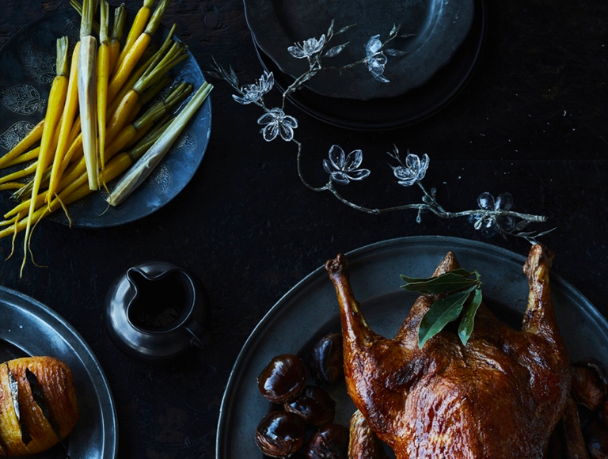

All the Latest from AEG

Summer Lunch Menu By Mark Best
AEG ambassador Mark Best's summer eats are guaranteed to help you make the most of the warmer weather and entertaining at home.
Read more

A Traditional Christmas Eve, Mark Best Style
One of Australia's best chefs and AEG ambassador, Mark Best, shares his favourite Christmas Eve menu which is sure to impress your guests.
Read more

Taking Taste Further
This exclusive cookbook gives you all the know-how you need. We've designed it to make sure you get the most out of our products - and the best out of your food.
Read more